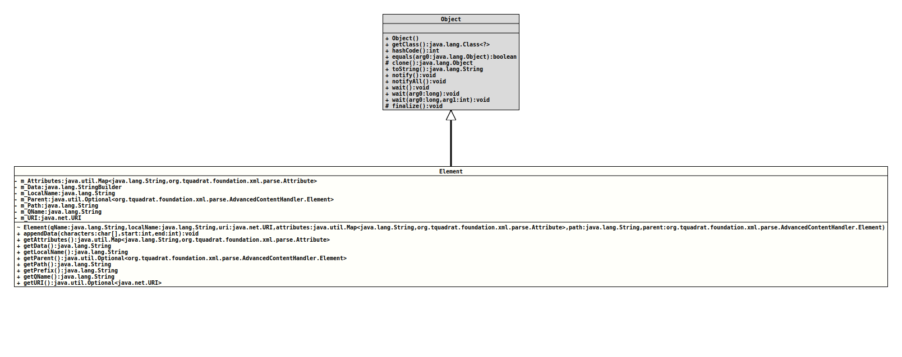

Module org.tquadrat.foundation.xml
Class AdvancedContentHandler.Element
java.lang.Object
org.tquadrat.foundation.xml.parse.AdvancedContentHandler.Element
- Enclosing class:
AdvancedContentHandler
@ClassVersion(sourceVersion="$Id: AdvancedContentHandler.java 1101 2024-02-18 00:18:48Z tquadrat $")
@API(status=STABLE,
since="0.1.0")
protected static final class AdvancedContentHandler.Element
extends Object
This class serves a container for the name, the data and the attributes
of an XML element.
- Author:
- Thomas Thrien (thomas.thrien@tquadrat.org)
- Version:
- $Id: AdvancedContentHandler.java 1101 2024-02-18 00:18:48Z tquadrat $
- Since:
- 0.0.5
- UML Diagram
-

UML Diagram for "org.tquadrat.foundation.xml.parse.AdvancedContentHandler.Element"
{kind=link}
-
Field Summary
FieldsModifier and TypeFieldDescriptionThe attributes.private final StringBuilderThe data.private final StringThe element's local name.private final Optional<AdvancedContentHandler.Element> The parent for this element.private final StringThe path to the element.private final StringThe element's qualified name.private final URI -
Constructor Summary
Constructors -
Method Summary
Modifier and TypeMethodDescriptionfinal voidappendData(char[] characters, int start, int end) Adds another data chunk to the data block for the current element.Returns the attributes of the element.final StringgetData()Returns the data block for this element.final StringReturns the local name of the element.Returns the parent element.final StringgetPath()Returns to XML path to this element.final StringReturns the prefix from the element's qualified name.final StringgetQName()Returns the qualified name of the element.getURI()Returns the namespace URI of the element.
-
Field Details
-
m_Attributes
The attributes. -
m_Data
The data. -
m_LocalName
The element's local name. -
m_Parent
The parent for this element. -
m_Path
The path to the element. -
m_QName
The element's qualified name. -
m_URI
-
-
Constructor Details
-
Element
Element(String qName, String localName, URI uri, Map<String, Attribute> attributes, String path, AdvancedContentHandler.Element parent) Create a new object of this class from an element's name and its attributes.- Parameters:
qName- The element's qualified name.localName- The element's local name.uri- The namespace for the element; can benull.attributes- The element's attributes.path- The path to the element; this is a string, compiled from the element's name, separated by slashes ("/").parent- The parent element for this element; may benull.
-
-
Method Details
-
appendData
Adds another data chunk to the data block for the current element.- Parameters:
characters- The characters.start- The start position inside the characters array.end- The ending position inside the array.
-
getAttributes
Returns the attributes of the element.- Returns:
- The attributes.
-
getData
Returns the data block for this element.- Returns:
- The data block.
-
getLocalName
Returns the local name of the element.- Returns:
- The local name of the element.
-
getParent
Returns the parent element. -
getPath
Returns to XML path to this element.- Returns:
- The element's path.
-
getPrefix
Returns the prefix from the element's qualified name.- Returns:
- The prefix; if there is no prefix, the empty String will be returned.
-
getQName
Returns the qualified name of the element.- Returns:
- The qualified name of the element.
-
getURI
Returns the namespace URI of the element.- Returns:
- An instance of
Optionalthat holds the namespace URI of the element.
-